IEEE Access, Volume 12, 2024 | DOI: 10.1109/ACCESS.2024.3439695
Original Authors: K. Wang, J. Ma, E. M.-K. Lai | Auckland University of Technology, New Zealand
Core Idea: BriskChain enables serverless functions to communicate directly with each other, bypassing the central controller, resulting in significantly reduced workflow overhead.
Every function must communicate through the central controller:
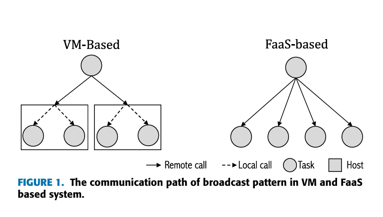
Figure 1: Communication complexity — VM-based vs FaaS-based systems
To design and implement a decentralized worker-side architecture that reduces communication and scheduling overhead in serverless workflows.
| Commercial | Open Source |
|---|---|
| AWS Lambda, Google Cloud Functions, Azure Functions, IBM Cloud Functions | OpenWhisk, OpenFaaS, Knative |
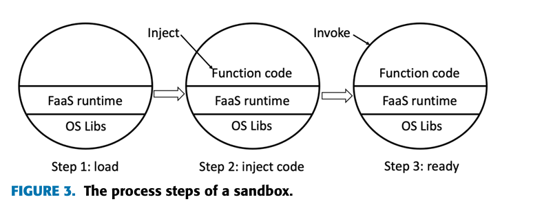
Figure 3: Sandbox lifecycle — Load, Inject, Ready
Sandbox: A containerized environment that isolates serverless function execution with required runtime and dependencies.
| Work | Year | Main Contribution | Limitation |
|---|---|---|---|
| StepConf [5,6] | 2022 | Dynamic workflow configuration to meet SLOs; function prewarming | Still relies on master-side architecture |
| O-RDC [7] | 2022 | Retention-aware container caching across edge nodes | Focuses only on cold-start latency reduction |
| HarmonyBatch [8] | 2024 | Heterogeneous batching for DNN inference tasks | Limited to deep learning workloads |
| Nightcore [17] | 2021 | Orchestrates chained functions on same host via gateway | Gateway still acts as a local master |
| FaaSFlow [2] | 2022 | Worker-side workflow execution with decentralized gateways | Still uses gateway proxies for coordination |
| BriskChain | 2024 | Fully decentralized function composition with embedded runtime | No intermediate masters or gateways required |
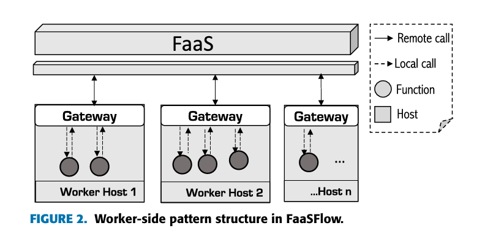
Figure 2: FaaSFlow architecture — still relies on gateway proxies
Functions can directly pass control and data to the next function without routing through the central controller.
Controller schedules each function and mediates all communication
Functions autonomously forward results to subsequent functions
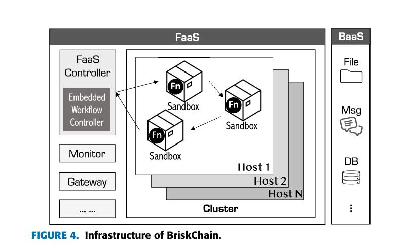
Figure 4: BriskChain Infrastructure
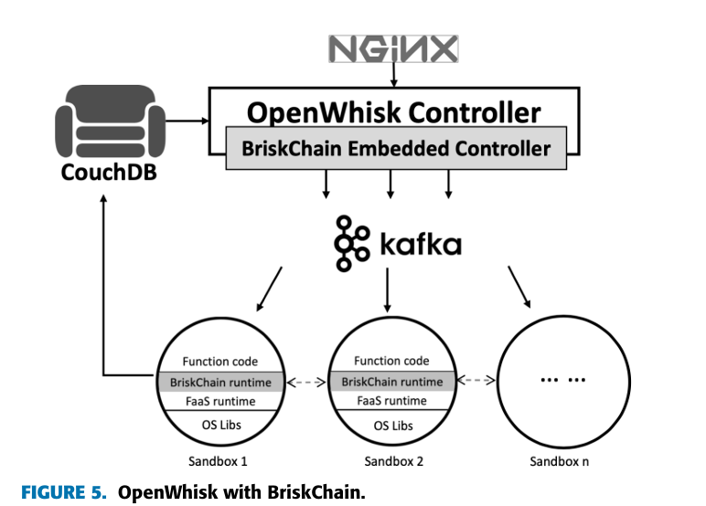
Figure 5: OpenWhisk extended with BriskChain (shaded components)
All sandboxes of the same workflow are placed on the same host, enabling local communication and eliminating network overhead.
Key Benefit: Database access only needed on errors — normal workflow proceeds entirely through direct sandbox communication.
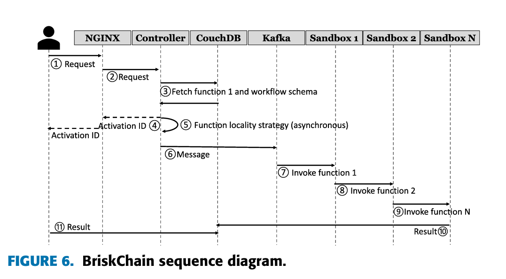
Figure 6: BriskChain sequence diagram
Critical Insight: Steps 7, 8, 9 occur without any controller involvement — the BriskChain Runtime handles all transitions.
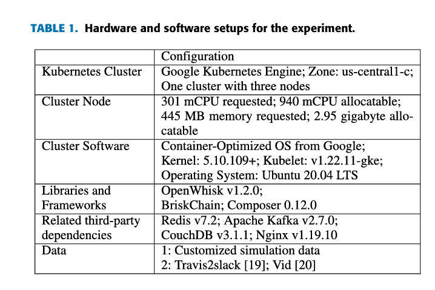
Table 1: Hardware and software configuration
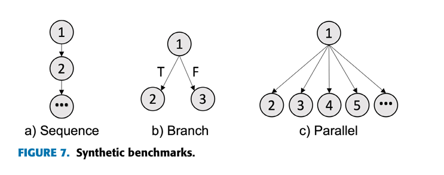
Figure 7: Synthetic workflow types
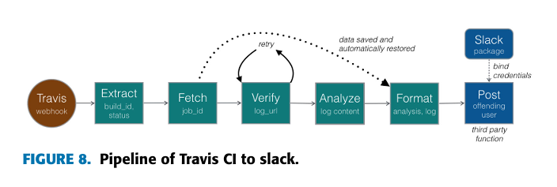
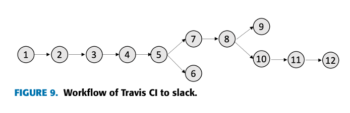
Figure 9: Travis2slack workflow (12 nodes)
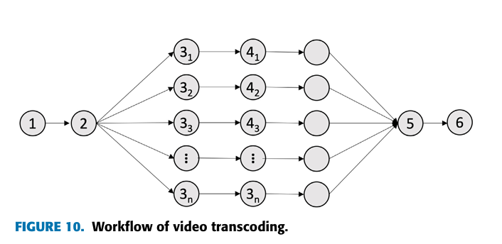
Figure 10: Video transcoding workflow (Fan-out/Fan-in)
Process: Split → Parallel transcode → Merge
Test: 100-second MOV → MP4. Video split required due to OpenWhisk's 1-minute function time limit.
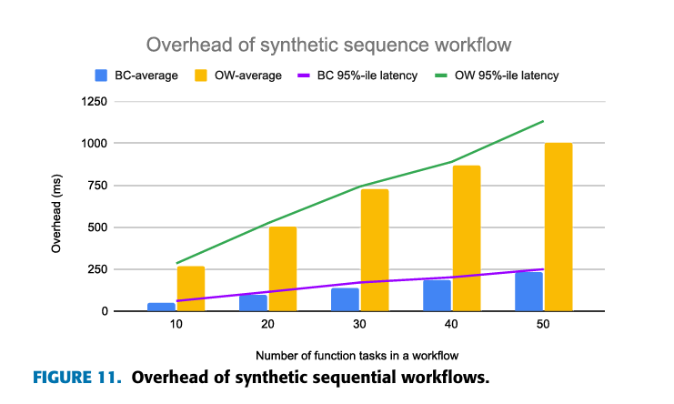
Figure 11: Sequential workflow overhead
Overhead grows linearly with function count
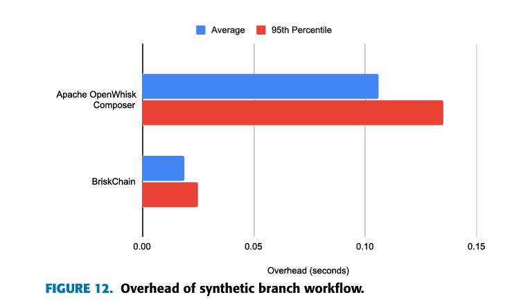
Figure 12: Branch workflow overhead
P95 latency: 70% lower than Composer
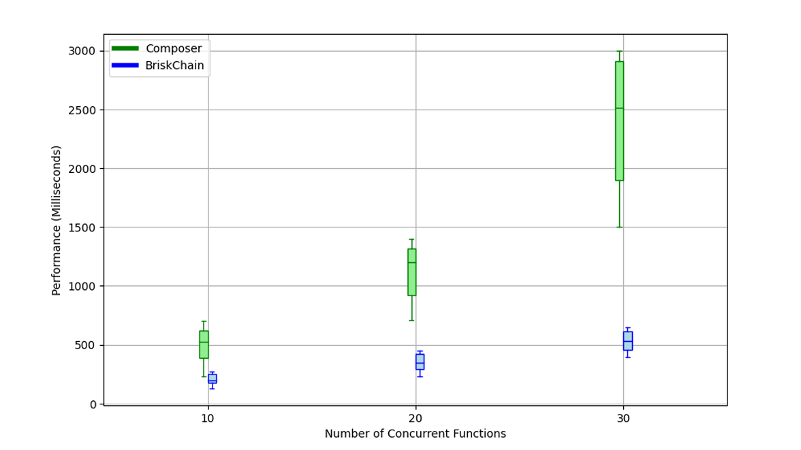
Figure 13: Parallel workflow execution time
30 parallel functions: BriskChain overhead is only 1/5 of Composer
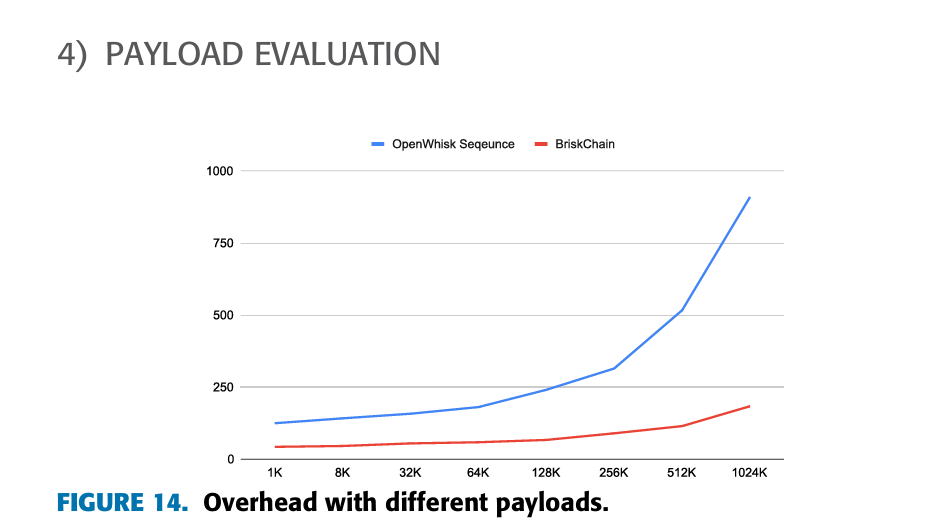
Figure 14: Overhead vs payload size
Scaling: OpenWhisk grows exponentially; BriskChain grows polynomially
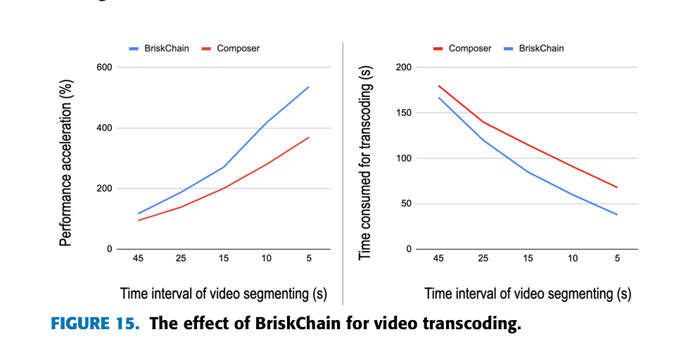
Figure 15: Video transcoding — performance vs segment duration
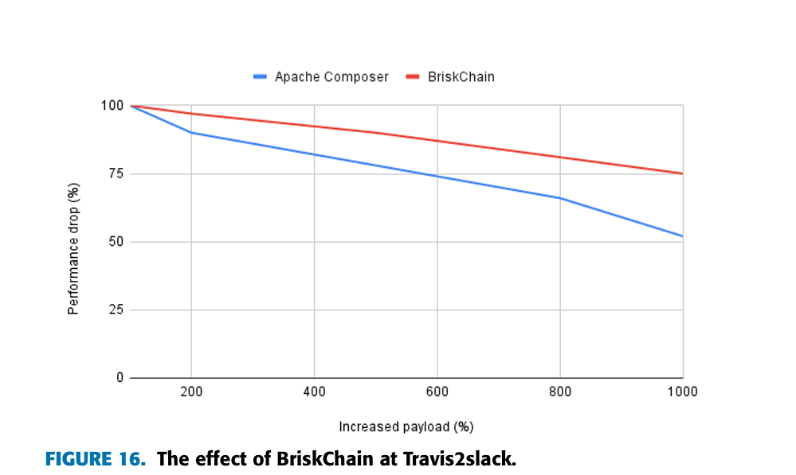
Figure 16: Travis2slack — performance vs payload increase
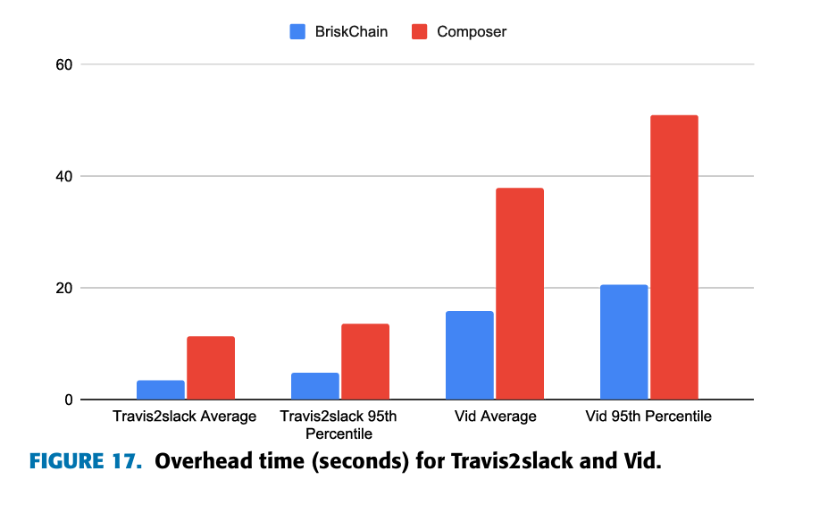
Figure 17: Overhead comparison — BriskChain vs Composer
| Workflow Type | Improvement |
|---|---|
| Sequential | >70% vs OpenWhisk |
| Branch | ~67% vs Composer |
| Parallel (30 fn) | 80% vs Composer |
| Video Transcoding | 35-60% better |
| Travis2slack | 70% less overhead |
Questions & Discussion
BriskChain: Decentralized Function Composition for High-Performance Serverless Computing
K. Wang, J. Ma, E. M.-K. Lai | IEEE Access, 2024